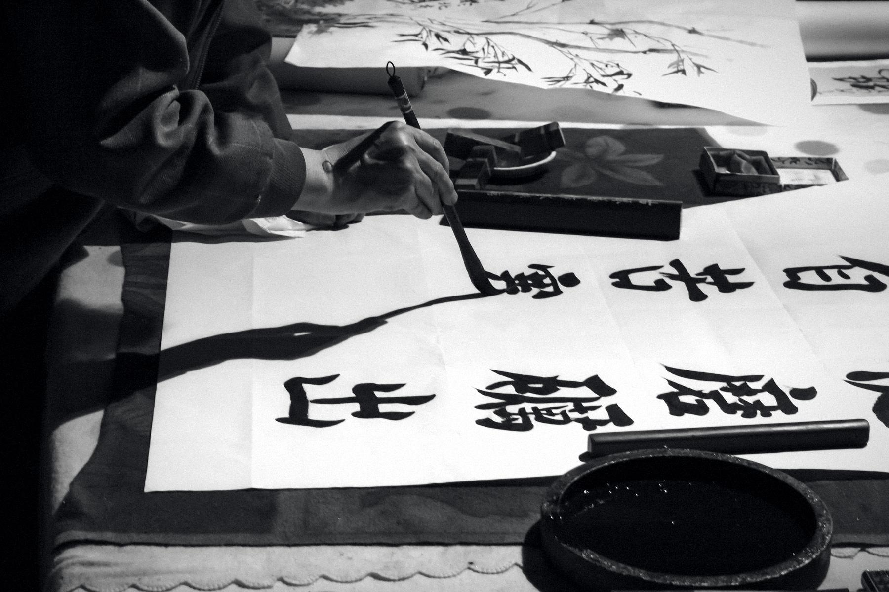

The movement leaves a trace and the water is still again. That is the whole art.
Sumi in water
合気道aikido. Ai, harmony. Ki, vital energy. Do, the way.
Aikido is a Japanese martial art founded in the twentieth century by Morihei Ueshiba, who was born in Tanabe on the Kumano coast and shaped the art over forty years in Hokkaido, Ayabe, Tokyo and Iwama. Its single principle is non-resistance rather than confrontation: the attacker is thrown or pinned by their own momentum. Done properly it requires no strength, which is why it is suitable for everyone, and why it can be practised into old age.
There is no first attack in aikido, and so there is no competition. You do not win a class; you train in it. For two hours you work with a partner who is trying to help you learn, not to beat you, and you take turns receiving the technique as carefully as you perform it. The falls you learn in your first weeks are the reason an aikidoka can be thrown a hundred times and get up smiling.
What people notice first is physical: flexibility, coordination, agility, a posture that stops collapsing under a desk. What they notice later is quieter. The art trains the habit of staying calm while something is coming at you, and that habit does not stay on the mat. It is why the people who stay longest here are often the ones who arrived most tired of intensity.
We train slowly, because speed hides errors and slowness exposes them. Precision first, then flow, then, years later, something that looks effortless. It is not effortless. It is practised.
The word the old teachers used is musubi, 結び, a tying together. Attacker and defender join into one movement, and the movement finishes. That is the depth of the art, and it is also its quiet: the loudest thing in the room is the fall.
The movement leaves a trace and the water is still again. That is the whole art.
Sumi in water

No music, no voice, just the sound of the fall.
Saturday class, the Masbro Centre
受身
Ukemi, the art of falling. The first skill you learn and the one you keep for life. Nobody is thrown until they can fall.
礼
Rei, etiquette. A bow at the door, a bow to your partner. The form is simple and we will show you all of it.
稽古
Keiko, practice. Two hours, paired, with partners changing through the class. Senior grades train with beginners by design.
結
Musubi, connection. Two people become one movement. Technique ends where it joins, and nothing is left over.
武器
Buki, weapons. Wooden sword and staff, introduced gradually. They teach distance, timing and posture that empty hand work alone cannot.

The brush does not go back over the stroke. Neither does the technique.
Shodō, the way of writing